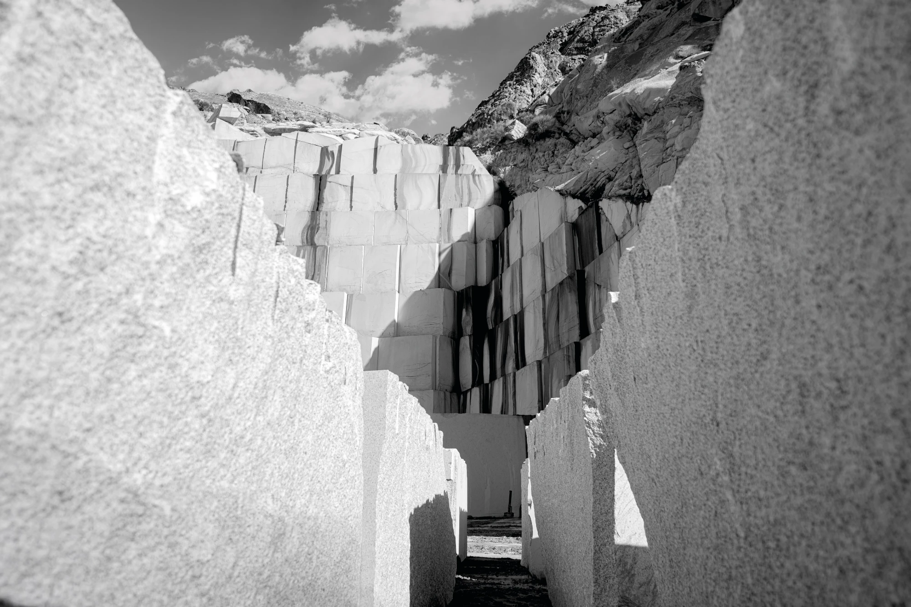
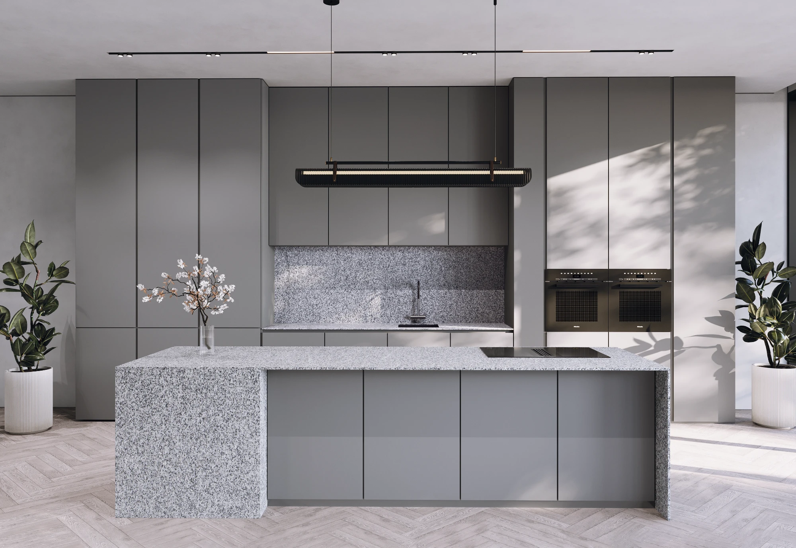

درباره ما
معدن گرانیت سفید نطنز ریجِن، در منطقه نطنز استان اصفهان، یکی از بزرگترین و معتبرترین منابع استخراج گرانیت سفید در ایران است.

معرفی
معدن گرانیت سفید نطنز ریجِن، تحت بهرهبرداری شرکت تولید سنگفرش ریجِن واقع در منطقۀ نطنز استان اصفهان، یکی از بزرگترین و معتبرترین منابع استخراج گرانیت سفید در ایران به شمار میرود. این معدن با برخورداری از ذخایر غنی و سنگهای باکیفیت توانسته است جایگاه ویژهای در صنعت سنگ کشور به دست آورد.
محصولات این معدن، بهخصوص گرانیت سفید با رنگهای متنوع از سفید خالص تا خاکستری روشن و دارای بافتی یکنواخت، در صنایع مختلف عمرانی، دکوراسیون داخلی، طراحی فضاهای شهری و همچنین پروژههای زیرساختی بزرگ کاربرد فراوانی دارند. بهرهبرداری مدرن، فرآوری دقیق و کنترل کیفی بالا از ویژگیهای بارز معدن ریجِن است که باعث شده است محصولات آن علاوه بر بازار داخلی، در بازارهای بینالمللی نیز بهخوبی شناخته و پذیرفته شوند.
تاریخچه
فعالیت معدن گرانیت سفید نطنز ریجِن از دهههای گذشته آغاز شده و تاکنون پیوسته ادامه داشته است. این معدن با گذشت زمان، همگام با پیشرفتهای فنی و تکنولوژیکی، زیرساختهای خود را بهطور چشمگیری توسعه داده است. استفاده از ماشینآلات پیشرفتۀ استخراج و فرآوری، بهکارگیری فناوریهای نوین در فرآوری سنگ و همچنین حضور گروهی متخصص و مجرب در زمینۀ معدنکاری و مهندسی سنگ، باعث شدهاند معدن ریجِن به یکی از پیشروهای صنعت سنگ گرانیت در ایران تبدیل شود.
سنگهای استخراجی این معدن به دلیل کیفیت بالای رنگ، مقاومت مکانیکی مطلوب و بافت پنبهای و یکنواخت، همواره مورد توجه معماران، طراحان داخلی، پیمانکاران و صادرکنندگان بوده است و نقش مهمی در پروژههای ملی و بینالمللی ایفا کرده است.

کاربردها
- صنایع عمرانی
- دکوراسیون داخلی
- طراحی فضاهای شهری
- پروژههای زیرساختی